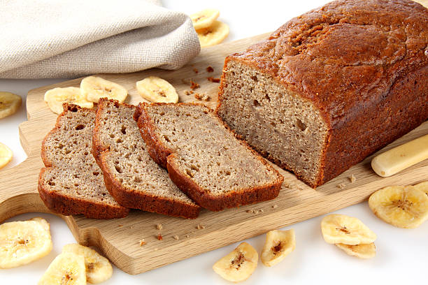

Banana Bread Recipe

This is the best banana bread you will ever have, I promise. It's moist and thick at the same time, and you can get really creative with it as well. For example, sometimes we will add extra bananas (the darker, the sweeter!) for a super banana-y flavor, or you can top it with cinnamon and nutmeg if you like a little extra spice. We pretty much make this on a weekly basis.
Ingredients
- 1 3/4 cups flour
- 1/3 cup organic pure cane sugar
- 1 teaspoon baking powder
- 1 teaspoon baking soda
- pinch of salt
- 1/3 cup vegetable oil
- 1 teaspoon vanilla extract
- 4 small or 3 large overripe bananas
- 1/4 cup almond milk
optional add-ins:
- handful of chopped walnuts
- handful of chocolate chips
- 1 teaspoon cinnamon and/or nutmeg
Instructions
- In a medium sized mixing bowl, mash bananas, add oil and vanilla extract, and mix again.
- Add the flour, sugar, baking soda, baking powder and salt, and mix just enough until the flour is combined.
- Pour batter into a greased loaf pan. Bake for about 50 min—1 hour.
- Remove from oven and let cool for 10 min before slicing.